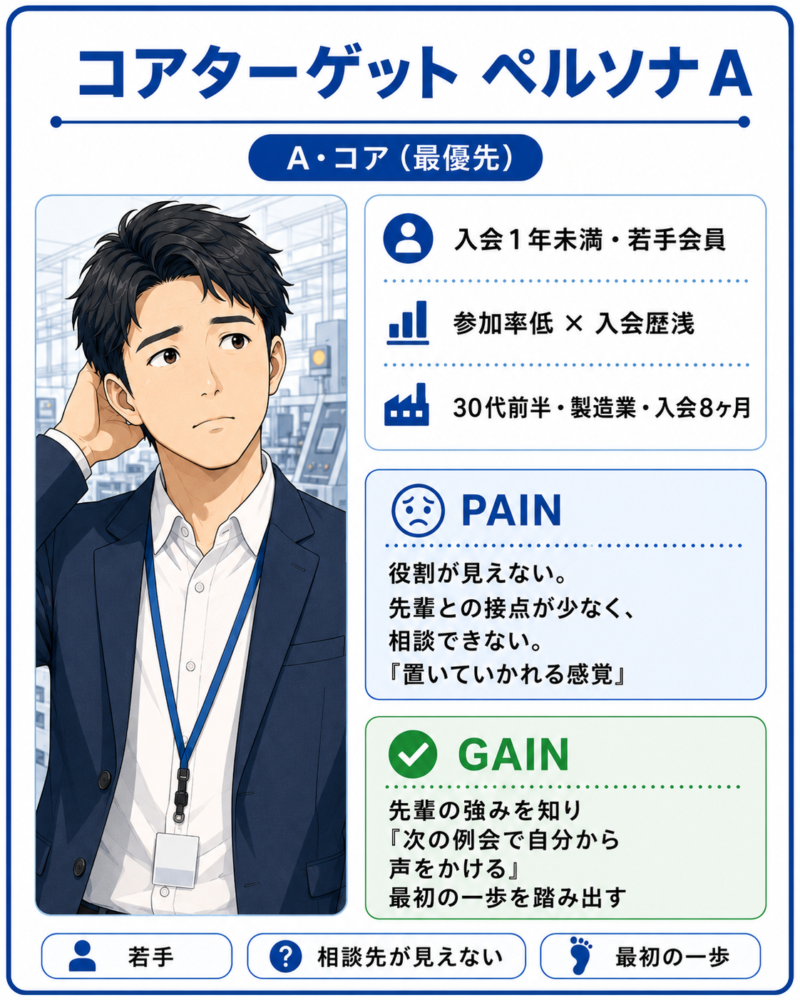
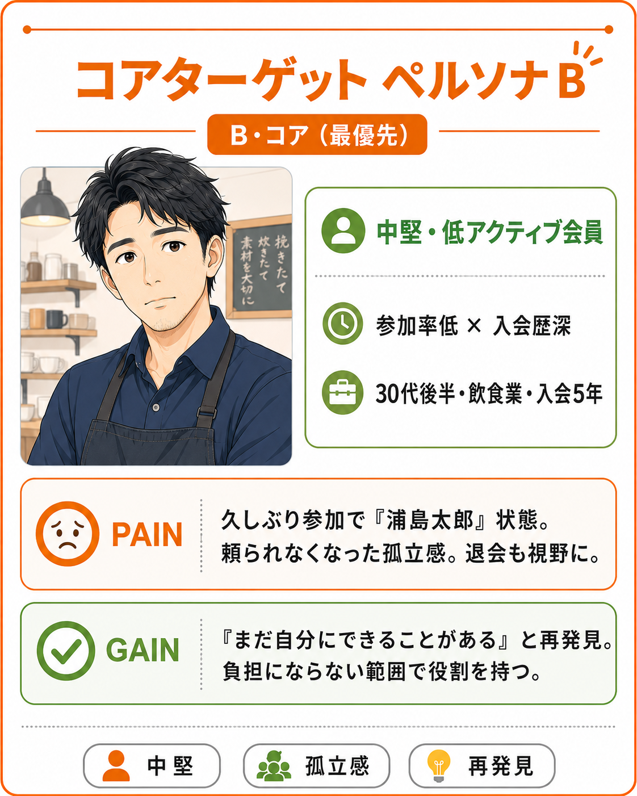

ブランドマネジメントシート
DEFINITION
KAGA JC GATHERING は「ゲーミフィケーション型ワークショップ」として設計されている。カジュアルなゲームやレクリエーションではなく、目標設定・ルール設計・段階的フィードバック・役割割当てを意図的に組み込んだ学習設計である。2周目の制約ルール（多用カード封印）は共助意識を体験的に生み出すための構造的仕掛けであり、ゲームの「楽しさ」は手段であって目的ではない。
| 事業名 | KAGA JC GATHERING（会員開発委員会アカデミー事業） |
|---|---|
| 一次ターゲット （直接参加者） |
加賀JC既存会員 約53名。コア：参加率50%未満・入会2年以内（優先テーブル配置）。GM・メンター枠：正副・委員長クラス 約10名。 |
| 二次ターゲット （間接的影響層） |
事業内で議論された地域連携アイデア・拡大対象者像を起点に、事業後の広報・報告書経由で地域企業・将来の拡大対象者へJC認知を波及。 |
| ペルソナ（コア） | 以下の「ペルソナ統合」セクションを参照 |
| 想定ニーズ |
・自分の強み・仕事観をJC活動の中で活かしたい ・他のメンバーのことをもっと深く知りたい ・JC活動に「参加する理由」と「自分の役割」を見つけたい ・気軽に参加できる、失敗しない心理的に安全な場がほしい ・「なんとなく参加」から「意味のある参加」にシフトしたい |
| 競合・類似事業との違い |
・懇親会・飲食型：関係性の深いメンバー同士で固まりがちで、深い議論に踏み込むには参入障壁が高い ・講演・研修型：一方向的で、自己理解・他者理解が深まらない ・既存JCプログラムそのまま：加賀JCの実態・地域文化・会員構成に合わない → KAGA JC GATHERING：体験型×自己開示×役割発見の3要素を組み合わせ、「参加したい」理由を本人の内側から生み出す ※ポジショニングマップへ |
| JCならではの提供価値・メリット |
・会員横断型の場を設計できるJCの組織力 ・地域事業を疑似体験できるゲーム形式（加賀の文脈に合わせたミッションカード） ・理事長所信「挑戦する人を孤立させない加賀JCの文化」との高い整合性 ・メンバーカード（強み・仕事観・地域での役割の可視化）→ 次のJC活動への接続 ・能登半島地震の経験を踏まえた地域連携・役割分担の重要性を体感できる設計 |
| 発信チャネル |
・加賀JC例会・委員会での事業説明（周知文 審議対象資料8） ・メンバーへの個別周知（LINEグループ・メール） ・事業後のSNS報告（委員会公式アカウント） ・理事会承認後、事業報告書としてLOM全体へ共有 |
戦略のポイント
- 体験型学習設計：カードワーク×ゲーム化で心理的安全を確保しながら、自己開示・他者理解・役割発見の3軸を120分内で同時達成する。
- 縦の繋がりを構造化：正副・委員長がGM・メンターとして関わることで「頼り方・頼られ方」を双方向かつ体験的に形成し、孤立を組織の仕組みで解消する。
- 単発で終わらせない設計：ふりかえりシート→事業後3ヶ月フォローの追跡設計で行動変容をKPIに接続し、事業の成果を次年度議案ブラッシュアップに還元する。
コアターゲット ペルソナ


| 参照ペルソナ | PAIN（現状の障壁） | GAIN（本事業で得ること） |
|---|---|---|
| C ・ 参照 熱量はあるが空回り型 入会3年・出席率高・立候補少 |
役割を引き受けたいが機会を掴めない。「手を挙げて良いのか」迷い。 | 自分が担える役割の具体像を持ち、相談先が明確になる。 |
| D ・ 参照 負担集中型ベテラン 入会7年・委員長経験・抱え込み傾向 |
頼める相手の強みが整理されていない。「頼り方」を知らない疲弊感。 | メンバーカードで頼れる相手が可視化。負担分散の具体策を得る。 |
ポジショニングマップ
X軸：参加者の能動性・体験性 Y軸：相互理解・関係構築効果
高・相互理解
高・相互理解
個人完結型
個人完結型
← 受動的
能動的 →
↑ 関係構築・相互理解
↓ 個人完結
1 懇親会・飲食型
2 講演・外部研修
3 コーチング
4 市販TBゲーム
5 他LOM事例流用
6 KAGA JC
GATHERING
GATHERING
1. 懇親会・飲食型
2. 講演・外部研修型
3. コーチング・個別面談
4. 市販チームビルディングゲーム
5. 他LOM事例そのまま適用
6. KAGA JC GATHERING
手段選定評価表
| 手段 | 体験性 | 関係構築 | 加賀JC適合性 | 継続性 | 選定評価 |
|---|---|---|---|---|---|
| 懇親会・飲食型 | △ | ○ | △ | △ | 補完的 |
| 講演・外部研修型 | △ | △ | △ | △ | 不採用 |
| コーチング・個別面談 | ○ | △ | △ | ○ | 不採用（コスト・規模） |
| 市販チームビルディングゲーム | ○ | ○ | △ | △ | 不採用（地域性なし） |
| 他LOM事例流用 | △ | ○ | △ | △ | 不採用（カスタマイズ不足） |
| KAGA JC GATHERING | ◎ | ◎ | ◎ | ○ | ✅ 採用 |
評価凡例：◎ 十分な強み / ○ 一定の強み / △ 弱いまたは不確実
手段選定理由
採用根拠 — カードワーク型ビジネスゲームを選ぶ3つの理由
- 3軸を同時達成できる唯一の手段：相互理解・役割発見・共助意識を120分の一体験で同時に扱える。代替案（講演・懇親会・付箋WS等）はいずれも1〜2軸止まり。
- 実証された成果：ビジネスゲーム研究所JC導入事例で「新入会員1年以内離脱率ゼロ」「ゲーム内リーダー体験 → 委員会で立候補」「異業種の距離縮小 → 事業提携」の成果を確認。（参考資料：ビジネスゲーム導入事例）
- スケール最適：参加者53名を7名×8テーブルに分割、120分に収め、予算149,000円内で実現。会員開発委員会＋委員長GM＋正副メンターの3層で運営。
代替案との比較
| 手段 | 強み | 弱み・不採用理由 |
|---|---|---|
| A. 講演・セミナー | 準備工数小・権威性 | 一方向。主体性・関係構築に効果薄。 |
| B. 公式JCゲーム | 承認容易・教材完成 | 加賀LOM固有のテーマと接続しにくい。 |
| C. 付箋WS（KJ法） | 低コスト・自由度高 | 発言偏差が起きやすく「偏り」を再生産するリスク。 |
| D. 合宿・非日常体験 | 結束効果・記憶残存 | 参加ハードル高・コスト大。加賀LOMに対しオーバースペック。 |
| E. 模擬理事会 | 議案構築力が身につく | 入会歴の浅いコアターゲットには負荷大。 |
| F. カードワーク型ビジネスゲーム（本案） | 3軸同時 ／ 120分 ／ 全員参加 ／ 加賀文脈カスタム | カード教材の制作工数（スケジュール逆算済み） |
想定リスクと対処
| リスク | 対処 |
|---|---|
| カード制作が間に合わない | 事前アンケート → ヒアリング → カード化を逆算し、本人確認2週間前完了をマイルストーン化 |
| テーブル間の盛り上がりに偏差 | ゲームマスター進行台本で問いかけを標準化（審議対象資料5参照） |
| メンターが審査員化する | 正副メンター役割確認シートでNG行動を明示 |
| 自己開示の踏み込みすぎ | 仕事観・地域での役割・強みに限定（プライバシー運営ルール参照） |
| 2周目制約が負担感で終わる | ふりかえりで「制約があったから見えた他者の貢献」を必ず言語化 |
コアターゲットに対する達成指標（KGI）
ペルソナA・B（コアターゲット）に対し、本事業の成否を判断するKGIを設定する。なお、議案本文（8.目的の検証方法）のKPI「参加率70%以上」は対象メンバー全体の数値であり、以下はコアターゲット別の上位指標として設定したものである。
| 対象 | 指標 | 目標値 |
|---|---|---|
| ペルソナA（入会歴浅） | 事業への参加 | 該当者の 80%以上 が参加 |
| 事業後アンケート「自分の役割を考えられた」 | 70%以上 | |
| ペルソナB（低アクティブ） | 事業への参加 | 該当者の 60%以上 が参加 |
| 事業後3ヶ月の例会出席率変化 | 事業前比 +15pt 以上 | |
| 全体 | 事業後アンケート「仲間を支える意識が高まった」 | 80%以上 |
| 全体 | 自由記述に「具体的に頼りたい人／引き受けたい役割」が記載 | 70%以上 |